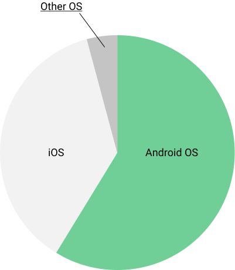
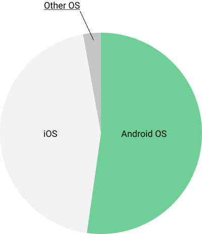

Android OSの現在のシェアや動向を紹介します。
Android OSとは
- google社が作ったスマートフォン向け OS(オペレーションシステム)
- 無料で世界中の人が使えるオープンソースOS
- 世界で一番普及しているプログラミング言語 「Java」を使って開発する
- Google I/O 2017にてモダン言語 「Kotlin」を正式採用
スマートフォン OSのシェア
現在世界で普及しているスマートフォン/タブレット端末に搭載されているOSは
iOSやAndroid OS,Windows Phoneの3つのOSが市場で多くのシェアを持っています。
2~3年前は Tizen, FireFox OS, ubuntu mobileなどいくつかのモバイルOSの開発が
ありましたが現在では開発を終了してしまっています。
| OS | 開発者 | 最新のバージョン |
|---|---|---|
| Android | 8.0 | |
| iOS | Apple | 11.1 |
| Windows 10 Mobile | Microsoft | 1607 |
世界のスマートフォン OS シェア
世界をマーケットとした場合、Android OSが最も利用されているスマートフォンOSであることがわかります。
Net Market Share参照※1

| OS | 開発者 | シェア |
|---|---|---|
| Android | 70.47% | |
| iOS | Apple | 28.55% |
| Series 40 | NOKIA | 0.32% |
| Windows 10 Mobile | Microsoft | 0.22% |
日本のスマートフォン OS シェア
マーケットを日本に絞った場合でも最近はAndroid OSがiOSのシェアを上回るようになりました。
これはAndroid OSを多く扱う格安SIMの認知が広がりと、iOSのデバイスの購入価格の上昇に
伴ってAndroid端末を購入する利用者が増えたものと考えられます。
KANTAR WORLDPANEL参照※2

| OS | 開発者 | シェア |
|---|---|---|
| Android | 55.00% | |
| iOS | Apple | 44.80% |
| Windows 10 Mobile | Microsoft | 0.10% |
Android アプリの開発環境
Android アプリの開発には Android Studioというソフトウェアを使います。
Android StudioはJET BRAINS社が開発したフリーのAndroid開発ソフトウェアです。
2015年頃までEclipseというソフトウェアでの開発もサポートしていましたが、現在はサポートを終了しています。
Androidアプリの開発は主にjavaやKotlinと言うプログラミング言語で開発を行います。
それぞれのプログラミング言語の特徴を紹介します。
- java
- Oracle(オラクル)社が開発したプログラミング言語
- どんなOS環境での実行も可能なプログラミング言語
- JVM(Java Virtual Machine)と言う仮想マシン上で動く
- Kotlin
- JET BRAINS社が “java” をベースに開発したプログラミング言語
- javaよりコード量を少なくAndroidアプリを開発できる
- javaの動作環境があれば実行可能
Android OSプラットフォーム
現在(2017/11)で最も多く利用されている Android OSバージョンは6.0(Marshmallow)になります。
販売されているAndroidデバイスは各販売元の企業によってカスタマイズされた物となっていることが多く、デバイスのスペックを含めた環境から販売元の企業によってアップデートできるOSを管理されており、最新のOSにアップデートできないことが多いです。
そのため、多くのユーザにアプリを配信したい場合は最も多く利用されているプラットフォームのコードネームより2つ前のコードネームまでを配信の対象にすると良いと思われます。
現在であれば6.0(Marshmallow)から2つ前のコードネームなので4.4(KitKat)までをサポート対象に含めることで、全世界のAndoroid OS ユーザの内、90%にアプリを配信することができることになります。
Android Developers参照※3
| Version | CodeName | API | User |
|---|---|---|---|
| 6.0 | Marshmallow | 23 | 30.9% |
| 5.0~5.1 | Lollipop | 21-22 | 27.2% |
| 7.0~7.1 | Nougat | 24-25 | 20.6% |
| 4.4 | KitKat | 19 | 13.8% |
| 4.1.x~4.2.x | Jelly Bean | 16-17 | 5.3% |
| 4.3 | Jelly Bean | 18 | 0.9% |
| 8.0 | Oreo | 26 | 0.3% |
Android アーキテクチャ
Android OSのアーキテクチャはLinux Kernelを基盤に作られています。
実際の開発に必ず必要になる知識ではありませんので紹介までにとどめさせていただきます。
Android Developers参照※4